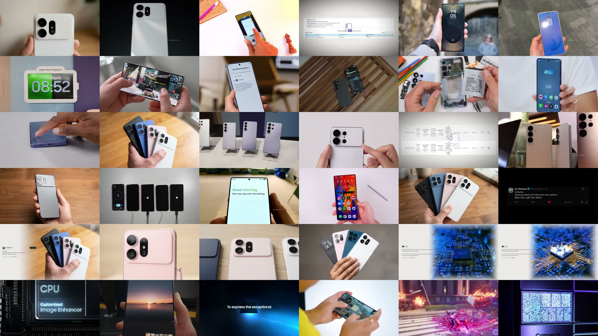
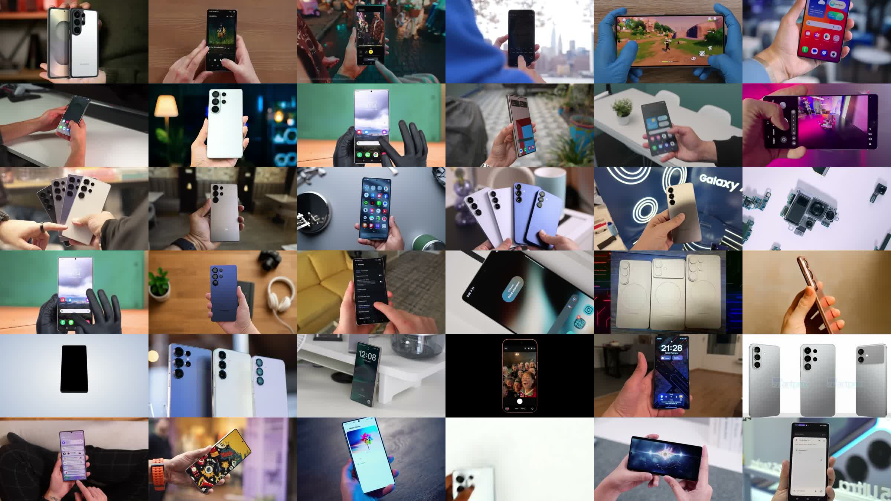
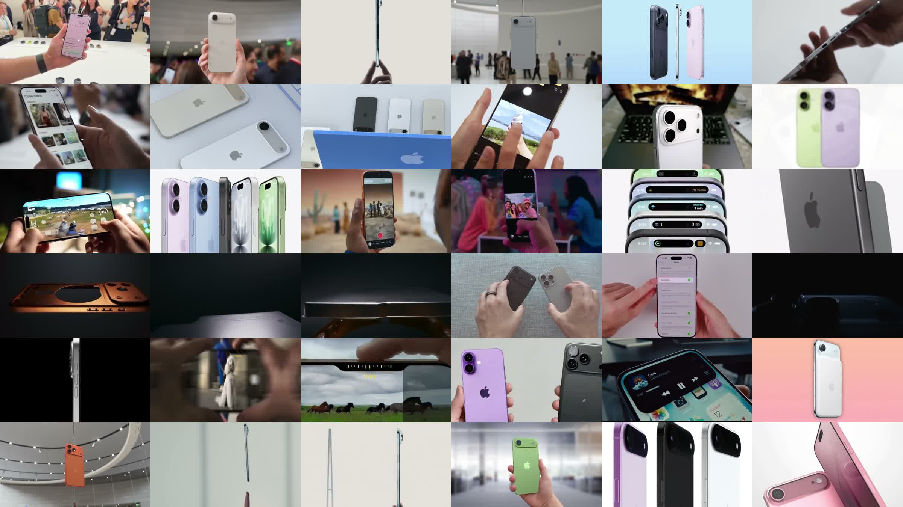
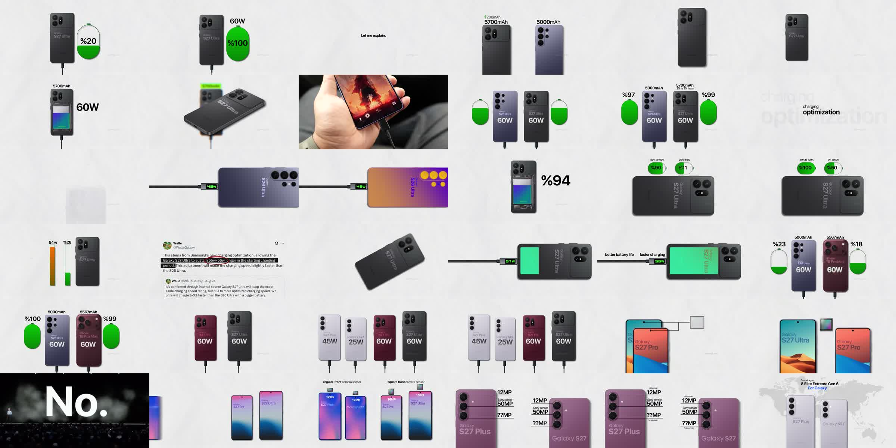
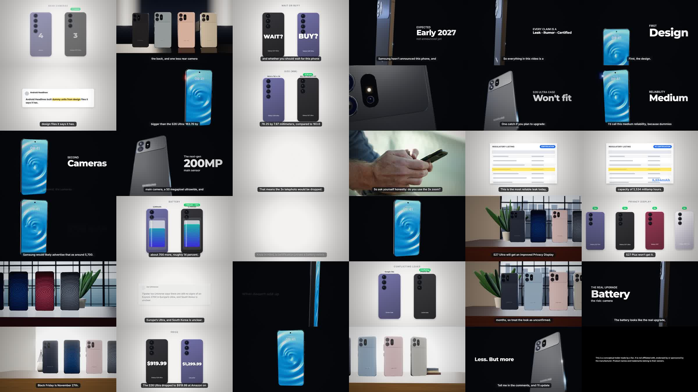

Why ours looks low quality: the reference channels vs tecg_review_v2
Measured on 2026-11-03 from the reference videos in Downloads (the ones in REVIEW_REFERENCE*.md) and our render. Each sheet shows one frame every 6 s over the first 3:36. Cuts were found with ffmpeg scene detection (threshold 0.28) and loudness with EBU R128. This is analysis only; no code was changed.
1. The pictures side by side





2. Measured
| NEVER Expected | S26 NEW CHANGES | iPhone 17 TRUTH | How's This Possible | Ours | |
|---|---|---|---|---|---|
| Length | 4:33 | 5:23 | 5:41 | 4:26 | 3:34 |
| Shots | 90 | 153 | 92 | 24 | 63 |
| Median shot | 2.4 s | 2.0 s | 2.4 s | 3.7 s | 2.9 s |
| Shots under 2 s | 40 % | 50 % | 40 % | 29 % | 17 % |
| Shots of 2–5 s | 44 % | 47 % | 35 % | 33 % | 67 % (all about the same length) |
| Real footage / real images | ~95 % | ~100 % | ~100 % | ~10 % | ~2 % (one stock clip) |
| Burned-in subtitles | none | none | none | none | on every line, in a box |
| Big text on the picture | rare (source screenshots) | none | none | small labels on the graphic | on ~60 % of shots |
| Looks in one film | one (real footage) | one | one | one (paper, all the way) | three, switching every few seconds (dark 3D, light paper, 3D rooms) |
| Loudness | −13.3 LUFS | −12.9 LUFS | −10.6 LUFS | −17.2 LUFS | −20.6 LUFS, voice only, no music bed |
3. What their editing actually is
A. The three leak/news channels (the same kind of video as ours)
- It's a footage compilation, not a motion-graphics film. Almost every shot is real material about the exact phone: hands turning the real phone or the dummy, leak renders of the actual design (pink/white S27 with the camera bar), teardown footage, UI screen recordings, official promo clips (the chip/CPU animation, "To express the exceptional"), games on the screen, launch events.
- Evidence is the real thing. The actual Ice Universe post, with avatar, verified tick and date. The actual certification table, with readable rows. Not a drawn stand-in.
- Text is almost absent. No subtitles and no captions: the voice carries the words and the picture carries the proof. The only text is inside screenshots.
- Fast, uneven rhythm. Half the shots are under 2 s, then a few long holds (a renders turntable, a screenshot). Cuts bunch up on lists ("black, blue, pink, white") and slow down on explanations.
- Motion comes from the footage itself: handheld hands, a turning phone, a scrolling screen. Nothing is a slow CG drift.
- Loud and full sound: −11 to −13 LUFS, voice on top of a steady music bed.
- Light, natural colour. Mostly bright desks, white and pastel phones, daylight. Very few dark frames.
B. The flat infographic channel (How's This Possible)
- One look for the whole film: the same off-white paper from start to end. It never jumps to dark 3D.
- Real phone cut-outs: flat renders that look like the actual S27 Ultra (camera bar, lens sizes, model name printed on the back), not icons.
- Dense, animated compositions: four phones with watt figures, green battery capsules filling, cables with "57W" readouts, 12MP/50MP/??MP callout lines on the camera, a world map with chip regions. Each shot keeps animating for 4–10 s, so long shots don't feel still.
- Numbers are part of the drawing (on the phone body, on the capsule), not a caption over it. No subtitles.
- Real footage only as a rare cut-in (a hand charging a phone, a launch stage "No.").
4. Where ours falls short, in order of how much it hurts
| # | Gap | Theirs | Ours | Hurts |
|---|---|---|---|---|
| 1 | Source of the pictures | Real footage and real leak images of this phone | A code-built grey phone and drawn cards for 98 % of the film | most |
| 2 | Evidence | Real tweet and listing screenshots | A generic "Regulatory listing" with grey bars, and a quote card with no avatar or date | high |
| 3 | Text load | No subtitles, almost no captions | A subtitle box on every line plus a big callout on most shots: it reads like slides | high |
| 4 | One consistent look | One look per film | Dark 3D, then light paper, then a 3D room, every few seconds: the film feels stitched together | high |
| 5 | Phone fidelity | The real design (photos, renders, faithful cut-outs) | 3D: a plain grey phone on charcoal. Flat: a rounded rectangle with 3 circles, icon-like | high |
| 6 | Rhythm | 40–50 % of shots under 2 s, clustered cuts, uneven | 17 % under 2 s, two-thirds of shots 2–5 s: an even, metronome pace | medium |
| 7 | Repetition | Each shot is a different piece of footage | The same moves (monolith, rise, orbit) and the same 5 rooms come back about 20 times | medium |
| 8 | Sound | −11 to −13 LUFS, voice plus a music bed | −20.6 LUFS, voice only: quiet and empty | medium |
| 9 | Infographic density | Capsules, cables, readouts and callout lines, all animating | One or two simple flat phones, a figure, then a cut | medium |
| 10 | Colour and light | Bright, daylight, pastel | Mostly dark charcoal frames | medium |
5. What this means
The rules work, but the material is wrong. The last passes made each picture say the right thing. These channels look high quality because of what is on screen (real footage, real evidence), not because of the graphics. More rules on top of code-built phones and cards won't close this gap.
Two honest routes, and one choice per film:
- News footage route (matches all three leak channels): footage-first. Each sentence gets real material:
- stock or web clips searched with the phone's name ("Galaxy S26 Ultra hands on", "S27 Ultra dummy");
- news and YouTube clips (allowed for this channel);
- leak render images;
- real screenshots of the tweet and the listing, through the Visuals tab;
- Flow pictures (the hands-on prompts already in
review.REVIEW_TYPES).
visual_bridge) that this would reuse. - Infographic route (matches How's This Possible): one paper look for the whole film, no dark 3D jumps. Flat phones become real cut-outs rendered from the S27 3D model (the
references.pyrenders already exist), with denser animated compositions (capsules, cables, callout lines) and no subtitle box.
The current "Mixed" style tries to be both at once, which is where the stitched, low-quality feel comes from.
6. What I couldn't measure
- Music versus voice inside the references. The loudness is measured, but separating the music bed needs a stem split.
- Exact real-footage shares. They're estimated from the 36 sampled frames per video, not counted shot by shot.